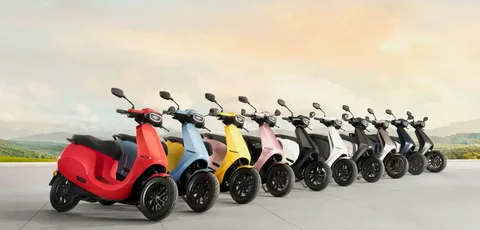

The products we use at home and on the road can have a real effect on our everyday routines. A smart TV can make family entertainment easier, while an electric scooter may offer a practical option for certain short journeys. Both are useful purchases to research carefully, especially when you want the product to suit your needs without putting too much pressure on your budget.
1. Technology Is Becoming Part of Everyday Life
Technology is no longer limited to offices or specialist users. Families use connected televisions for films, sports and online videos. Students and professionals rely on digital devices for learning, communication and work. At the same time, electric mobility is attracting attention from people who want another way to cover everyday distances.
There is no single product that is right for everyone. The best choice depends on where you live, how you travel, what you watch and how much you can comfortably spend. Taking a little time to compare products can help you avoid paying for features that you will rarely use.
2. Choosing a Smart TV for Your Home
A smart TV connects to the internet and can run supported streaming and entertainment apps. Depending on the model, it may also offer screen sharing, voice controls or other connected features. Before choosing one, think about the room where it will be placed and the way your household normally watches content.
Screen size is a useful starting point, but it should match the room and viewing distance. Also compare resolution, brightness, sound quality, available ports, Wi-Fi support and the operating system. Check that the applications you use are supported on the model you are considering.
Warranty coverage and after-sales support are worth checking too. A lower price may look attractive, but it is important to understand what support is available if the television develops a problem. You can browse smart TVs for home entertainment and compare the listed options and product details before making a decision.
3. What to Check Before Buying an Electric Scooter
An electric scooter may suit people who regularly make short trips, provided the model, local roads and charging arrangements fit their routine. It is important to look beyond the appearance of the scooter and understand how it will perform in everyday conditions.
Start with the distance you expect to travel. Compare the manufacturer's stated range with your likely daily journey, and remember that rider weight, speed, road surface, hills, temperature and battery condition can affect real-world range. Check the battery type and capacity, charging time, charger details and the cost and availability of a replacement battery.
Brakes, tyres, suspension, lights and overall build quality matter for comfort and control. Ask about the warranty, servicing arrangements and availability of spare parts before ordering. You should also confirm that the scooter is appropriate for local road rules and that you have a safe place to park and charge it.
To review the category and compare current listings, see electric scooters on monthly installments. Product specifications and plan availability can vary, so read the details for the individual model.
4. Compare Features Instead of Following Trends
It is easy to be influenced by a popular brand, a new release or an eye-catching advertisement. Those things may help you discover a product, but they should not make the decision for you. Write down the features that matter most and compare a few suitable models side by side.
For a television, your list might include screen size, picture quality, app support and warranty. For an electric scooter, it might include realistic range, battery details, charging time, brakes and service support. Give more importance to the features you will use every week than to extras that sound impressive but do not solve a real problem.
5. Plan Your Budget and Understand Payment Options
Before placing an order, decide how much you can afford after essential expenses such as housing, food, bills, transport and savings. If you are considering an installment plan, check the advance payment, monthly amount, duration, any applicable fees and the full amount payable by the end of the plan.
Do not assume that every product has the same payment terms. Eligibility, available plans and charges can differ by product and financing option. Read the current terms carefully and ask for clarification before agreeing to a schedule. A monthly payment should leave enough room for your other responsibilities.
It is also sensible to compare the installment total with the cash price. A smaller monthly amount can still add up to a higher overall cost. Choose the option that makes sense for your circumstances rather than stretching your budget for a newer or more expensive model.
6. How Online Shopping Can Make Research Easier
Online marketplaces let shoppers review product categories and details without travelling from one store to another. You can make a shortlist, compare specifications and then contact the seller or platform with any questions. This is useful when you are still deciding which type of product is right for you.
Atomshop lists different product categories, including smart TVs and electric scooters, and provides installment options on eligible products. The available plan, delivery area and final terms should always be checked on the relevant product or service page before you order. Visit Atomshop's online shopping marketplace to explore the categories and current information.
Before confirming an online purchase, review the exact model, colour, specifications, delivery arrangements, return policy and warranty details. Keep your order confirmation and payment records so that you can refer to them if you need support later.
7. A Quick Checklist Before You Buy
Use this short checklist before making a final decision:
- Does the product meet a real need in your home or daily routine?
- Have you checked the model name and full specifications?
- For a scooter, have you reviewed range, battery, charging, brakes and service support?
- For a TV, have you checked screen size, display quality, apps and connectivity?
- Do you understand the warranty, delivery and return conditions?
- Have you checked the complete cash or installment cost?
- Can you comfortably manage the payment schedule?
If any important detail is unclear, get an answer before submitting your order. A little research at the start can prevent frustration later.
8. Final Thoughts
A smart TV and an electric scooter serve different purposes, but the same buying principles apply to both: understand your needs, compare the specifications, check the support available and set a realistic budget. A thoughtful purchase is more likely to remain useful long after the excitement of buying something new has passed.
Take your time before deciding. Explore the options, read the payment terms and choose a product that fits your routine and finances. The right choice is not necessarily the newest or most expensive one; it is the one that offers practical value for you.
